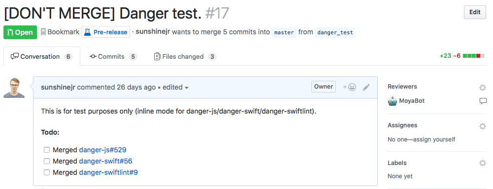
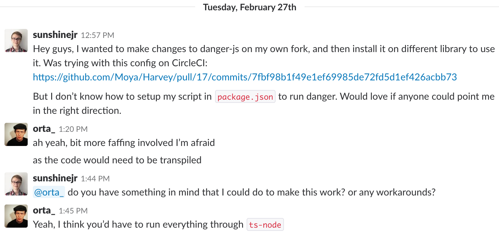
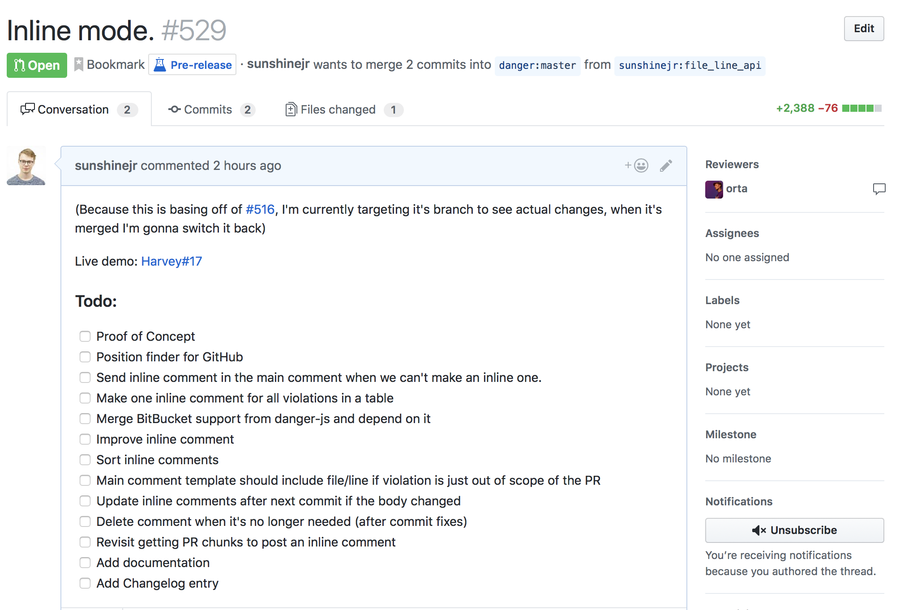
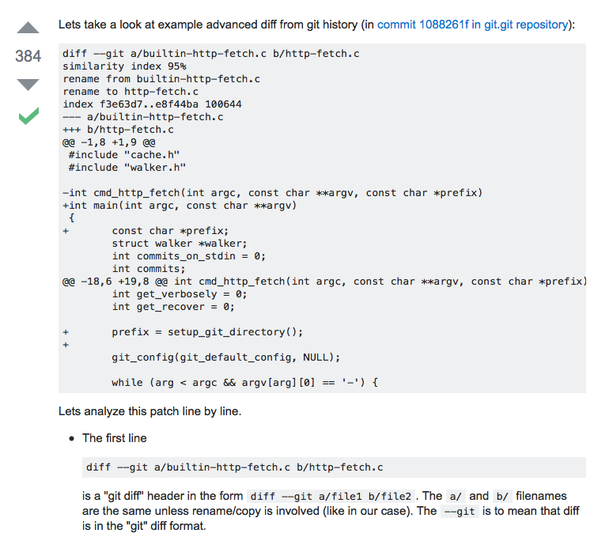
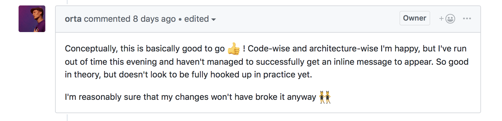
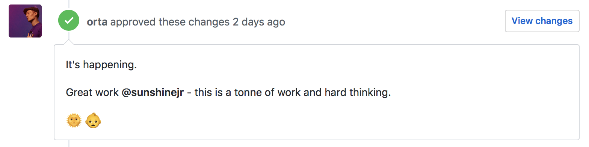
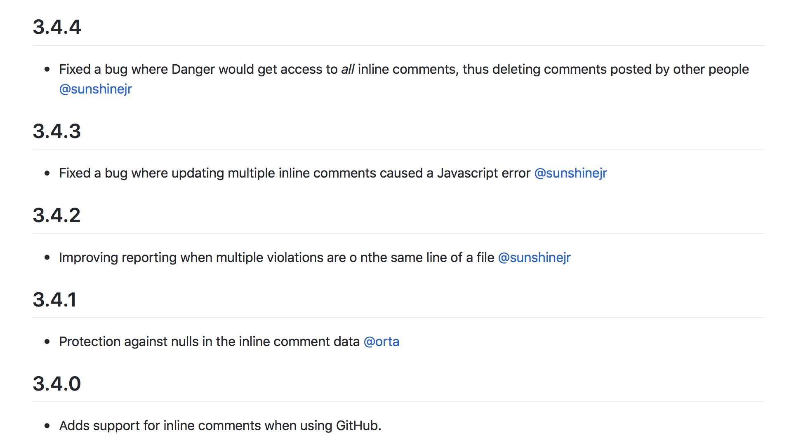
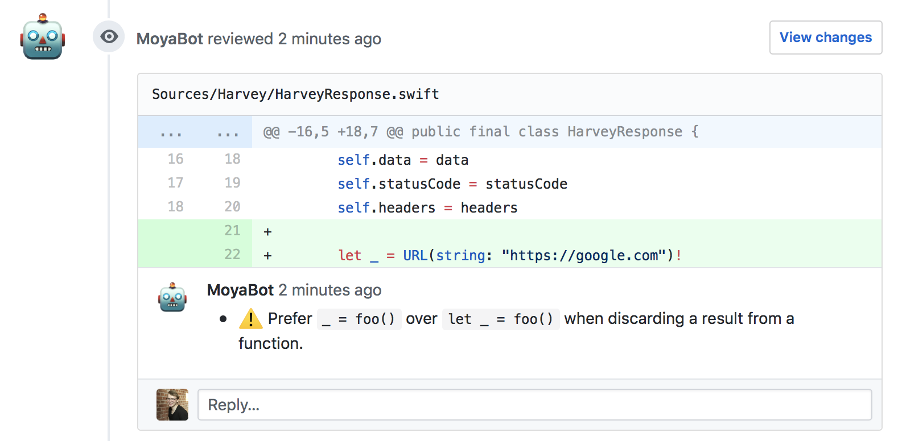

Open Source Adventures #1 - Xiblint
Apr 3, 2018 17:02 · 12 minute read
I really like to work on Open Source Software. It is something different. You can find there many different problems or aspects that simply do not exist in a day-to-day job. There is also a lot of unexplored ground and I think that excites me the most. In this series, Open Source Adventures, I would like to explore them with you. This is the first post of the series and it covers a story about this “one simple feature” I wanted to implement…

Background story
At Droids On Roids, we try to make our lives better not only by improving our code, but also by automating everything that’s possible. Thus, when we first found out about Danger (a tool in which you can have a set of rules for each Pull Request) and SwiftLint (a linter for Swift), we created a small internal project to compare them with similar tools on the market. Then, we decided to go with a Danger/SwiftLint setup for all our iOS projects - mostly because we could have a much bigger impact on it, as it’s open-sourced. Now, after quite some time, they play a big role in our pull request process and we’re really happy with it.
That was also back when Danger was only available in Ruby. Right now, there is a port in Javascript/Typescript and Swift. This allows writing configuration files (that is, Dangerfiles) in any of these languages as well. This is great because it allows iOS developers to write configuration files with tools they normally use and are familiar with. Unfortunately, Swift version is dependent on Javascript version and so we didn’t introduce it as JS version still required some work (e.g. Inline mode wasn’t there — and we use it quite frequently).
About a month ago I found xiblint - a linter for Xibs & Storyboards, the UI part of iOS apps. As we had a great linter for the backend already, this was a perfect fit for our frontend. We just needed to port this library to Danger. That meant creating a Danger plugin; fortunately, the process is quite straightforward — especially with the help of this nice tutorial on the Danger website.
xiblint
Before creating a plugin, I needed to get a sense of the library itself, to see if I could use it without any modifications. My go-to technique in these situations is to browse some of the code online and then, if I decide that it’s doable, git clone and play with it.
I noticed that xiblint is a Python library. Python alone isn’t a problem - as I have some scripting experience from a few years back - I just didn’t know anything about structuring, creating or using a Python library. And because the library itself didn’t have any documentation, I had to learn how to run it locally so I could change things here and there and have a quick feedback.
My first idea was to start looking for a Python library that had that specific info inside a Readme — unfortunately without luck. I returned back to the old and gold technique: pray to Google. Typed in “How to install Python package” and guess what — of course there was a question about it on Stack Overflow already:
I found at least two ways of installing the library: using pip and locally using python install. When I figured it out, I created a pull request to the library with a little installation guide. This one might be obvious for library maintainers or people who had experience in the Python ecosystem, but for potential contributors that do not know much about it, it might even be a blocker. Thus, this was my first takeaway:
I should always try to write a Readme for this one contributor that knows how to program things, but doesn’t really know anything about the ecosystem, development process, installation or usage of the library.
As a side note, after the code review, it turned out that there is another way of installing a Python library when it’s released in pypi. What a time to be alive 😄
Adding xiblint to the Danger plugin
So I was playing with xiblint for a while and then I saw that it could only return a raw output:
./Project/Base.lproj/LaunchScreen.storyboard:3: error: retina4_7: Simulated metrics ("View As:") must be one of: retina4_0, watch38 [rule: simulated_metrics_retina4_0]
This is probably somehow readable to people, but our Danger plugin would need to parse this output before it could be useful. From this raw output I would need to get the following:
- a line
- a rule
- a file
- an error message
And, I mean, I could try to get all of these using regular expressions, but a small change of its syntax would probably break everything. As you can imagine, it is not a dream come true from a maintainer’s point of view, because the library would need additional time spent on validating that it still works.
However, the there is a simpler solution: update xiblint so it can return a plugin-readable output. And because JSON is highly supported on all the languages that Danger supports (Javascript, Ruby and Swift) it was my first choice. The response could look like the following:
[
{
"line": 3,
"rule": "simulated_metrics_retina4_0",
"file": "./Project/Base.lproj/LaunchScreen.storyboard",
"error": "retina4_7: Simulated metrics (\"View As:\") must be one of: retina4_0, watch38"
}
]

So I looked at how SwiftLint does this and it just has a parameter that specifies a “reporter”. You can select one of many reporters, including HTML, JSON and Emoji 🤔. For this case though, I just needed an emoji a JSON reporter, but scaling possibilities are exciting indeed.
So I started implementing something similar. I knew that I needed to add a --reporter parameter to the executable, so I looked if there was any parameter used in the library and build on that. It turned out that there was, indeed, a --version parameter. I looked for a Python package that it was imported from, argparse, and I started reading its documentation. Quickly after, the first commit was born:

As you can see, there is a raw reporter as a default. This is because I didn’t want to break things unnecessarily. This library has been on the market for quite some time and requiring an additional parameter would be a breaking change, thus needing a major release (following Semantic Versioning).
After the parameter setting, I just needed a way of returning an output based on the reporter. A few hours later the second PR was born. In this one, I asked if this is something the maintainers would like to see — and if not, I could just work on my own fork.
You need to remember that even though it seems like a perfectly fine use case for me, someone might have a different vision for the project — and that is totally fine! The beauty of Open Source is that I can expand the project using my own fork, while still syncing the core design with its original version (of course then you need to make sure the License is allowing you to do such things, but from my experience most of the time it does).
You can also spot that I don’t really have experience with Python libraries or xiblint itself but I still created a pull request with whatever I came up with. I could try to master my pull request with weeks of research just to seem like a Python veteran. I didn’t do it though, because on the other side there is a person that knows both the project and Python well enough, so if there is a way to improve the pull request, they will surely point it out. And if it is a complete mess — I’m also cool with it. I will do my best to create a new one with the given feedback. This is something I learned over the years. But if the fear of failure is stopping you from doing Open Source or blogging, I encourage you to watch this talk by Ash Furrow, about Teaching and Learning. It helped me a lot, maybe it will help you as well.
Danger plugin
This second pull request meant that I could finally start working on the Danger plugin. Of course, the end product would be a Swift Danger plugin, but before that, I needed to create this Inline mode feature for Danger JS so I can use it in Danger Swift…
Danger JS and Typescript
In the end, why wouldn’t I want to implement the most requested feature for Danger JS? Especially because the issue has been reported for more than a year and a few contributors already tried to implement it. These are good indicators for having some F U N. And, because I always wanted to learn Typescript, it was a perfect match.

Similarly to xiblint, I needed a way of testing my local changes to see if the library works as expected. Unfortunately, because of the domain of Danger, most of the testing had to be done on our Continuous Integration infrastructure. So I opened a pull request on Harvey, a smaller project that we like to test things on:

As you can see, I already prepared the environment to test not only my fork of Danger JS but also the end product — my fork of Danger Swift and Danger SwiftLint. I created four work in progress pull requests in total, just for testing Danger. By doing that I let people know that the feature is in the works so they can potentially avoid duplicating work.
Setting this all up was not an easy task for me, especially running my own fork of Danger JS on CI. If you are interested in the final code, take a look at this Harvey Circle CI setup. This could take me weeks, so I reached out to Orta, the Danger creator, for help:

His solution almost worked, I just had to google this one tiny little error that I’ve got… 😄 And the fix was, of course, one tiny little flag to add… 🤣 Oh boy, how I looooove command line.
Then, I started making a TODO list for Danger JS’ pull request. This was a big task and I wanted to make sure that I see the progress that I make. Otherwise, I could just end up abandoning the work whenever I get lost.

As you can see in the screenshot, I based my pull request on another. This is because Danger JS already had a really big pull request in the works — support for Bitbucket Server. And because I knew that this could have a really big impact on my pull request, I needed to merge our branches as soon as possible. This is another takeaway:
Try to look if there is a big pull request in the works already when you start working on your another big one. If possible, merge it as soon as possible and watch the updates on this issue. The amount of work may increase as time passes by. Sometimes you might even end up starting again from scratch.
My works started with a Proof of Concept. It had some really ugly code in it, but I wanted to see if it was possible for me to do. Then, because Danger is used by many people and I reworked its core functionality, I wrote the biggest amount of tests for a feature in my entire life. I felt really comfortable running a test on CI afterwards.
When it comes to Typescript, first I played with the online playground. Then, when implementing the feature, I just started by copying the style from current codebase and improved it after reading some stuff online. With Jest, the testing framework, their docs answered all questions I had.
After a significant amount of time, more tips from Orta, learning how to analyze git diff syntax…

… and a few more long nights spent with Jest (which is awesome, btw) it happened. The Inline mode was finished and I could move to the Swift section…
Or at least that’s what I thought:

It turned out that the bug was not related to the PR, it just became visible when I implemented it. Nevertheless, I’ve fixed it as well and we shipped it! 🚢

…5 times 😅

At the end of the day, I just couldn’t possibly get it right on the first try, could I? 😅 But then, safely, I could proceed to the Swift section.
Danger Swift and Danger SwiftLint
About a month before the xiblint adventure I implemented a fix to Danger Swift and a feature to Danger SwiftLint - so I already knew the domain. And also, Swift. After about a month in Python and Typescript, in a completely unknown universe, it felt really comfortable. Even though those are still external libraries - not created or maintained by me - I just happen to know Swift on a comfortable level. This gave me some real confidence boost and in a few hours, these two (#1 and #2) were also finished.
Finally, the whole feature was completed and I saw a comment issued by MoyaBot, using Danger SwiftLint and Danger Swift, processed by Danger JS:

It felt awesome when all the time spent on this feature paid off with a working product. Not only because I needed it, but also because some people were waiting for this so they can switch to Danger JS as well.
The code is not perfect and there gonna be bugs, that’s for sure. But for every bug we fixed, we wrote at least one test. By doing so we’re gonna make it easier for other people to make changes in the core, as it will be battle-tested.
The aftermath
Unfortunately, I didn’t even start writing a xiblint plugin for Danger 😅. But a good foundation has been created though, so I might do it in the future.
I could also say that I worked for about a month on a feature that I didn’t finish. But I learned some Python and Typescript voodoo. Oh and Jest. I really like Jest, I wish there was a counterpart library for Swift…
Still, I call it #worth.
…
Thank you so much for reading until the end! This is the first post in the series, so please let me know what do you think.
Thanks again and see you in the next one!